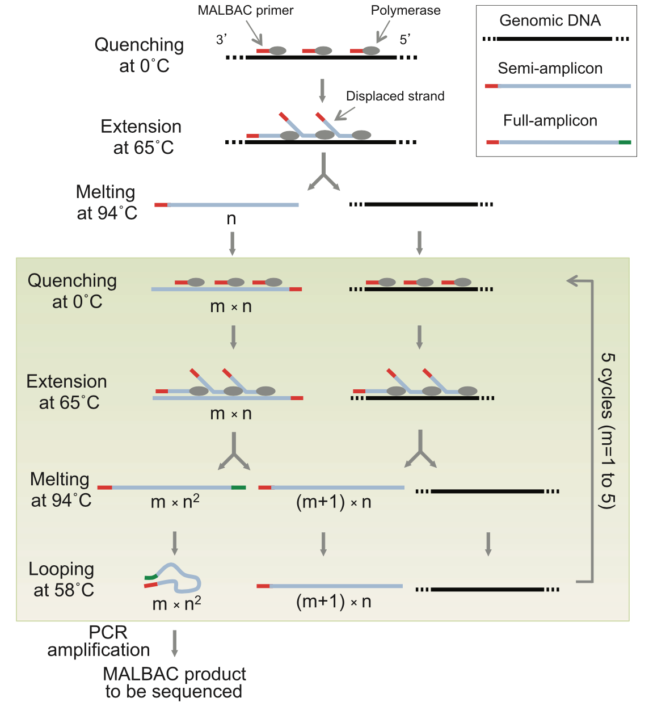

The Multiple Annealing and Looping Based Amplification Cycles (MALBAC) is actually a method for single-cell genomic DNA preamplification. The final library structure depends on the method of choice after the pre-amplification. MALBAC is a quasilinear preamplification method that reduces the bias associated with nonlinear amplification. During the first 5 cycles of preamplification, only the original genomic DNA and the first round of products are used as the templates, which reduces errors.
MALBAC random primers: 5'-
MALBAC PCR primer: 5'-
5'- GTGAGTGATGGTTGAGGTAGTGTGGAG 5'-GTGAGTGATGGTTGAGGTAGTGTGGAG 5'-GTGAGTGATGGTTGAGGTAGTGTGGAG NNNNNNNN NNNNNNNN NNNNNNNN 3'- XXXXXXXXXXXXXXXXXXXXXXXXXXXXXXXXXXXXXXXXXXXXXXXXXXXXXXXXXXXXXXXXXXXXXXXXXXXXXXXXXXXXXXXXXXXXXXXXXXXXXXXXXXXXXXXXXXXXXXXXXXXXXXXXXXX...XXXXX -5'
5'- GTGAGTGATGGTTGAGGTAGTGTGGAG 5'-GTGAGTGATGGTTGAGGTAGTGTGGAG 5'-GTGAGTGATGGTTGAGGTAGTGTGGAG NNNNNNNN-------------------------------->NNNNNNNN-------------------------------->NNNNNNNN-----------> 3'- XXXXXXXXXXXXXXXXXXXXXXXXXXXXXXXXXXXXXXXXXXXXXXXXXXXXXXXXXXXXXXXXXXXXXXXXXXXXXXXXXXXXXXXXXXXXXXXXXXXXXXXXXXXXXXXXXXXXXXXXXXXXXXXXXXX...XXXXX -5'
Origincal genomic DNA: 3'- XXXXXXXXXXXXXXXXXX...XXXXXXXXXXXXXXXXXX -5' The Semi-amplicon: 3'- XXXXXXXXXXXXXXXXXX...XXXXXXXXXXXXXXXXXX GAGGTGTGATGGAGTTGGTAGTGAGTG -5'
Origincal genomic DNA as template (will generate new Semi-amplicon): 5'- GTGAGTGATGGTTGAGGTAGTGTGGAG 5'-GTGAGTGATGGTTGAGGTAGTGTGGAG 5'-GTGAGTGATGGTTGAGGTAGTGTGGAG NNNNNNNN-------------------------------->NNNNNNNN-------------------------------->NNNNNNNN-----------> 3'- XXXXXXXXXXXXXXXXXXXXXXXXXXXXXXXXXXXXXXXXXXXXXXXXXXXXXXXXXXXXXXXXXXXXXXXXXXXXXXXXXXXXXXXXXXXXXXXXXXXXXXXXXXXXXXXXXXXXXXXXXXXXXXXXXXX...XXXXX -5' The Semi-amplicon as template (will generate Full-amplicon): 5'-GTGAGTGATGGTTGAGGTAGTGTGGAG 5'-GTGAGTGATGGTTGAGGTAGTGTGGAG 5'-GTGAGTGATGGTTGAGGTAGTGTGGAG NNNNNNNN-------------------------------->NNNNNNNN-------------------------------->NNNNNNNN--------------...-------------------------------> 3'- XXXXXXXXXXXXXXXXXXXXXXXXXXXXXXXXXXXXXXXXXXXXXXXXXXXXXXXXXXXXXXXXXXXXXXXXXXXXXXXXXXXXXXXXXXXXXXXXXXXXXXXXXXXXXXXXXXXXXXXXXXXXXXXXXXX...XXXXXGAGGTGTGATGGAGTTGGTAGTGAGTG -5'
Origincal genomic DNA: 3'- XXXXXXXXXXXXXXXXXX...XXXXXXXXXXXXXXXXXX -5' The Semi-amplicon: 3'- XXXXXXXXXXXXXXXXXX...XXXXXXXXXXXXXXXXXX GAGGTGTGATGGAGTTGGTAGTGAGTG -5' The Full-amplicon: 5'-GTGAGTGATGGTTGAGGTAGTGTGGAG XXX...XXXCTCCACACTACCTCAACCATCACTCAC -3'
XXX...XXX X CTCCACACTACCTCAACCATCACTCAC -3' XGAGGTGTGATGGAGTTGGTAGTGAGTG -5' XXX...XXX
5'- GTGAGTGATGGTTGAGGTAGTGTGGAG ------> 5'-GTGAGTGATGGTTGAGGTAGTGTGGAG XXXXXXXXXXXXX...XXXXXXXXXXXXXCTCCACACTACCTCAACCATCACTCAC -3' <------GAGGTGTGATGGAGTTGGTAGTGAGTG -5'
5'- GTGAGTGATGGTTGAGGTAGTGTGGAG XXXXXXXXXXXXX...XXXXXXXXXXXXXCTCCACACTACCTCAACCATCACTCAC -3' 3'-CTCCACACTACCTCAACCATCACTCAC XXXXXXXXXXXXX...XXXXXXXXXXXXXGTGAGTGATGGTTGAGGTAGTGTGGAG -5'
Uisng Nextera: 5'- AATGATACGGCGACCACCGAGATCTACAC NNNNNNNNTCGTCGGCAGCGTC AGATGTGTATAAGAGACAG XXXXXXXX...XXXXXXXXCTGTCTCTTATACACATCT CCGAGCCCACGAGAC NNNNNNNNATCTCGTATGCCGTCTTCTGCTTG TTACTATGCCGCTGGTGGCTCTAGATGTG NNNNNNNNAGCAGCCGTCGCAG TCTACACATATTCTCTGTC XXXXXXXX...XXXXXXXXGACAGAGAATATGTGTAGA GGCTCGGGTGCTCTG NNNNNNNNTAGAGCATACGGCAGAAGACGAAC -5'Illumina P5 i5s5 ME gDNAME s7 i7Illumina P7 Uisng TruSeq: 5'-AATGATACGGCGACCACCGAGATCTACAC TCTTTCCCTACACGACGCTCTTCCGATCT XXX...XXXAGATCGGAAGAGCACACGTCTGAACTCCAGTCAC NNNNNNNNATCTCGTATGCCGTCTTCTGCTTG -3' 3'-TTACTATGCCGCTGGTGGCTCTAGATGTG AGAAAGGGATGTGCTGCGAGAAGGCTAGA XXX...XXXTCTAGCCTTCTCGTGTGCAGACTTGAGGTCAGTG NNNNNNNNTAGAGCATACGGCAGAAGACGAAC -5'Illumina P5 Truseq Read 1 gDNATruseq Read 2 8 bpIllumina P7 Index
Standard sequencing workflow is used, and you can check any other pages.